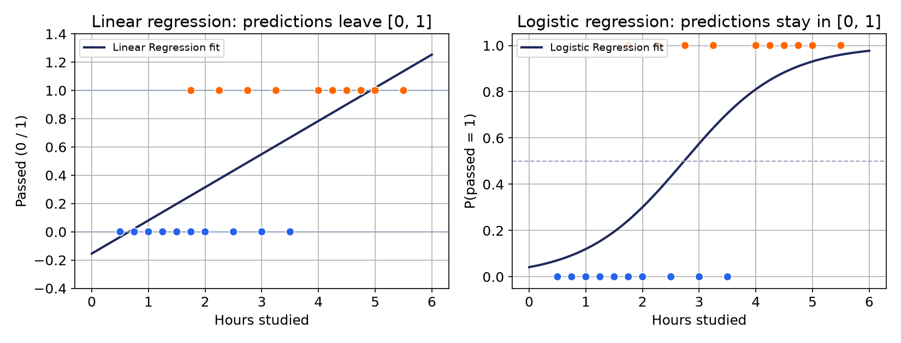

یادگیری با نظارت (Supervised Learning) دو شاخه دارد:
رگرسیون (پیشبینی عدد)
و
طبقهبندی (پیشبینی دسته/برچسب).
هفتهی سوم شاخهی اول را دیدیم؛ این هفته کاملاً به شاخهی دوم اختصاص دارد.
سوال این هفته: بهجای «قیمت خانه چقدر است؟»، حالا میپرسیم
«این ایمیل اسپم است یا نه؟»
چرا یک مدل جدید؟
چرا رگرسیون خطی نمیتواند طبقهبندی کند؟

خط رگرسیون خطی میتواند از ۰ و ۱ خارج شود؛ عددی مثل «۴.۳» برای یک برچسب، بیمعناست.
کاربردها
مثالهای طبقهبندی در دنیای واقعی
تشخیص اسپمSpam Detection
پیشبینی بیماریDisease Prediction
تحلیل احساساتSentiment Analysis
پیشبینی ریزش مشتریCustomer Churn
اصطلاحشناسی
طبقهبندی دودویی در برابر چندکلاسه
Binary Classification
فقط دو برچسب ممکن (مثلاً اسپم / غیراسپم).
Multiclass Classification
بیش از دو برچسب (مثلاً نوع گل بین چند گونه)
مفهوم کلیدی هفته
یک طبقهبند خوب، مستقیم برچسب حدس نمیزند؛
یک احتمال تولید میکند و بعد با یک آستانه تصمیم میگیرد.
ساختار هفته
نقشه هفته
بخش ۱
Logistic Regression
اولین طبقهبند: احتمال، مرز تصمیم خطی، آستانه.
اولین مدل طبقهبندی دوره
بخش ۲
Evaluation Metrics
Confusion Matrix · Precision · Recall · ROC/AUC
بدون این، مقایسه بیمعناست
بخش ۳
K-Nearest Neighbors
یادگیری بدون معادله؛ رأیگیری بر اساس فاصله.
یک رویکرد کاملاً متفاوت
بخش ۴
Decision Tree
تصمیمگیری با پرسشهای پیدرپی؛
Gini،
بیشبرازش.
پایهی بسیاری از الگوریتمها مثل جنگل تصادفی
بخش ۵
Comparing Models
کدام مدل، چه زمانی؟ جمعبندی و تکلیف.
جمعبندی هفته
دیتاستها
دیتاستهای این هفته
Breast Cancer Wisconsin
دیتاست اصلی، واقعی و دودویی: از روی ویژگیهای سلولی یک بافت،
خوشخیم یا بدخیم بودن را تشخیص میدهیم.
نمونهی مستقیم «پیشبینی بیماری».
Synthetic 2D (make_moons)
چون با ۳۰ ویژگی نمیشود مرز تصمیم را دید، از یک دیتاست ساختگی دوبعدی
برای دیدن مرز تصمیم استفاده میکنیم؛ دقیقاً مثل کاری که با رگرسیون چندجملهای کردیم.
پیام کلیدی هفته
طبقهبندی یعنی پیشبینی یک دسته، نه یک عدد.
این هفته سه راه کاملاً متفاوت برای این کار میبینیم:
یکی با یک معادله، یکی بدون هیچ معادلهای،
و یکی با پرسشهای پیدرپی.